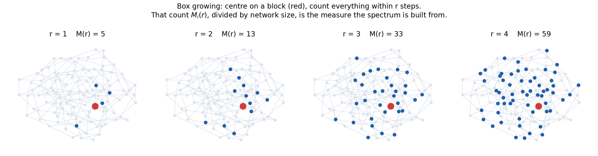
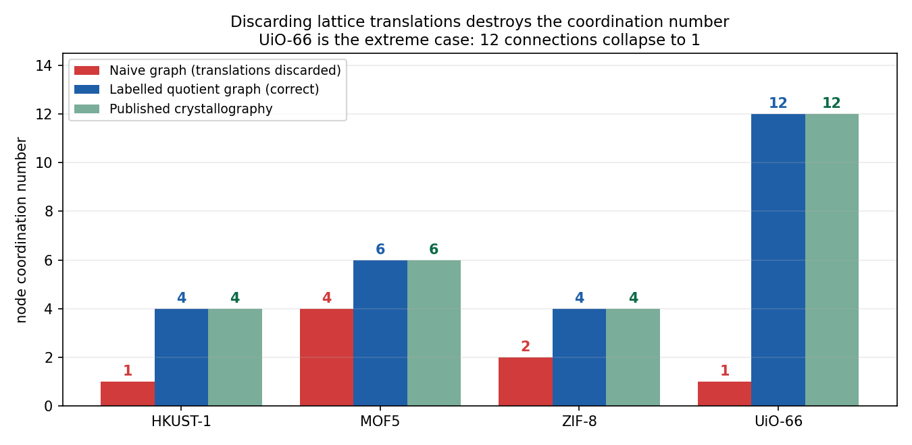
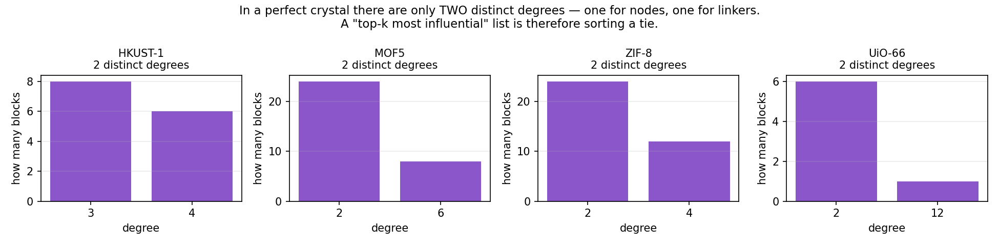
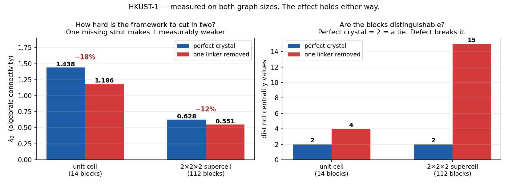

1From Crystal to Network — Every Term Explained
Everything after this point is network science. If you have not met these ideas before, this section builds them from nothing, in order, with a picture for each. No term is used later that is not defined here.
- You know
- That the crystal has been cut into blocks.
- This section
- Defines every graph-theory term used from here on — vertex, edge, degree, adjacency — from scratch, assuming none of it.
- Which lets us
- Read the rest of this page without a mathematics background.
10.1 · What a graph is
A graph is the simplest possible description of "what is connected to what". It has only two ingredients:
- a vertex (also called a node) — a thing. Drawn as a dot.
- an edge — a connection between two things. Drawn as a line.
That is all. A graph has no notion of distance, angle, size, or chemistry. Two graphs are the same graph if the same things are connected, however you draw them.
10.2 · Turning a MOF into a graph
The decomposition in the previous sections split the crystal into building blocks — metal nodes and organic linkers. That is exactly what we need, because now:
The atoms disappear. A copper paddlewheel made of 14 atoms becomes a single dot. A benzene linker becomes a single dot. What is left is the framework's wiring diagram.
10.3 · Degree — and why it is the coordination number
The degree of a vertex is simply how many edges touch it. Count the lines meeting a dot; that is its degree.
Because every edge is a bond between blocks, the degree of a node vertex is how many linkers that metal cluster connects to — which chemists already have a name for: the coordination number. The two words describe the same count.
This is the bridge. It is why a published crystallographic fact can be used to check a graph: if the literature says UiO-66's zirconium cluster is 12-connected, then that vertex must have degree 12. If it does not, the graph is wrong.
10.4 · The problem: a crystal has no edges
Here is where it gets subtle, and this is the idea that Section 10 depends on.
A crystal is infinite. What a `.cif` file stores is one small repeating box — the unit cell — plus the instruction "now tile this forever in all directions". The real material is that box copied endlessly.
So a block sitting near the wall of the box is genuinely bonded to a block in the next box over. Those bonds are real. But if you only look inside one box, they appear to go nowhere and get thrown away.
10.5 · The fix: label each edge with where it goes
The standard solution is to keep one vertex per block in the cell, but attach to every edge a label saying which neighbouring copy of the box it lands in. That label is three whole numbers — one per direction.
t = (0, 0, 0)— both blocks are in the same boxt = (1, 0, 0)— B is in the box one step along the first axist = (0, −1, 1)— B is one box back along the second axis and one forward along the third
A graph built this way is called a labelled quotient graph. The name sounds forbidding; the idea is just "a finite graph plus a note on each edge saying which copy of the cell it reaches". It is finite, so a computer can hold it, but it describes the infinite crystal exactly.

10.6 · Centrality — "which blocks matter most"
Once the graph is right, we can ask which vertices are structurally important. Three standard measures, in plain terms:
| Measure | The question it answers | In a MOF |
| Degree | How many neighbours does this vertex have? | the coordination number — how many linkers a cluster holds |
| Eigenvector centrality | Is this vertex connected to other well-connected vertices? (importance by association) | whether a block sits in a densely tied region |
| Betweenness | How many shortest routes across the network pass through this vertex? | whether a block is a bottleneck the framework depends on |
10.7 · The Laplacian and λ₂ — "how hard is this to break?"
The Laplacian is a matrix built from the graph: L = D − A, where D lists each vertex's degree and A records which vertices are joined. You never need to look at the matrix itself — what matters is its eigenvalues, a list of numbers extracted from it.
- The smallest is always 0. How many zeros there are tells you how many disconnected pieces the graph has. Two zeros means the framework has fallen apart — a useful automatic alarm.
- The second-smallest, λ₂, is called the algebraic connectivity. It measures how hard the network is to cut in two. Higher = more robustly tied together. Lower = there is a weak place.
10.8 · What a "defect" means here
This word appears throughout the later sections, so it is worth being exact.
A defect is a place where the real crystal departs from the perfect repeating pattern. The kind used here is a missing-linker defect: a strut that should be present at some position simply is not there, leaving a gap.
In the graph, introducing a defect is simply deleting one linker vertex and the edges attached to it.
10.9 · Vocabulary, all in one place
| Term | Meaning |
| vertex / node | one building block, drawn as a dot |
| edge | a bond between two blocks, drawn as a line |
| degree | how many edges touch a vertex — the coordination number |
| unit cell | the small repeating box the CIF file stores |
| translation t | three integers saying which copy of the box an edge reaches |
| labelled quotient graph | a finite graph whose edges carry translations — describes the infinite crystal exactly |
| supercell | several unit cells stacked together, to give a bigger graph to measure on |
| centrality | any measure of how structurally important a vertex is |
Laplacian L = D − A | a matrix built from the graph; its eigenvalues describe connectivity |
| λ₂ (algebraic connectivity) | second-smallest Laplacian eigenvalue — how hard the network is to cut in two |
| defect | a missing linker — real MOF chemistry, modelled by deleting a vertex |
| diameter | the largest number of steps between any two vertices |
| box / radius r | all vertices within r steps of a chosen vertex |
Everything from Section 10 onward uses only these terms. If a later sentence stops making sense, the definition is in this table.
2Building the Network — and the Mistake That Ruins It
This is the first real step of the analysis: turn the building blocks into a graph. It sounds mechanical, and it is — but there is one way to do it wrong that silently corrupts every number computed afterwards. This section shows both constructions side by side so you can watch the difference.
- You know
- The blocks, and the vocabulary of graphs.
- This section
- Joins the blocks into a periodic quotient graph, and shows the mistake that ruins it: forgetting the crystal repeats forever.
- Which lets us
- Have a graph that is actually correct — UiO-66 at coordination 12, not 1.
What we are doing
From Section 10: each building block becomes a vertex, each bond between blocks becomes an edge. Do that, and the framework becomes a network we can measure.
The trap
A crystal is infinite, but a CIF file only stores one small repeating box. Blocks near the wall of that box are bonded to blocks in the next box over — genuine bonds in the real material. There are two ways to handle them:
| What it does | Result | |
| Naive graph | Draw one edge per pair of blocks that share a bond, and ignore which box the bond crosses into. | Connections are lost. Blocks joined by several bonds running in different directions collapse into a single edge. |
| Labelled quotient graph | Keep one vertex per block, but label every edge with the translation t saying which copy of the box it reaches — (A, B, t). |
Every connection survives. Finite enough to compute on, but describes the infinite crystal exactly. |
Why this is not a small detail — a worked case
Take UiO-66. Its unit cell contains exactly one zirconium cluster, and the published crystallography says that cluster is 12-connected: it holds twelve linkers.
But the cell only has room for a few of those linkers inside it. The rest of the twelve connections run out of the box and come back into a neighbouring copy. Under the naive construction those connections either vanish or merge together. Measured on our own pipeline, the cluster reports as 1-connected instead of 12 — almost the entire coordination environment disappears.

How we know which one is right
This is the reason the coordination number matters so much: it is published, independent, and checkable. The literature states what each of these clusters connects to, so the graph has a right answer to be measured against. Toggle the two constructions below and watch the numbers move.
Validation against published crystallography
3Which Blocks Are Influential?
Three complementary measures. Degree is the raw coordination number. Eigenvector centrality is the principal eigenvector of the adjacency matrix — a block scores highly when it is connected to other high-scoring blocks. Betweenness counts how many shortest paths run through a block, distinguishing bridges from merely well-connected vertices.
- You know
- A correct periodic graph.
- This section
- Asks which blocks matter most to the structure, and finds that in a perfect crystal the question has no answer, because every cluster is an exact copy of every other.
- Which lets us
- Understand why the next section deliberately damages the crystal.

Centrality of the selected structure
4Defects — Why We Deliberately Break the Crystal
Section 11 ended on a problem: in a perfect crystal, no block is more influential than any other, so the question the brief asked cannot be answered as posed. This section is the way out — and it turns out to be better chemistry, not a workaround.
- You know
- That perfect symmetry makes influence unrankable.
- This section
- Removes a single linker on purpose, breaking the symmetry, and measures what changes.
- Which lets us
- Turn influence into something measurable, and quantify how much a framework weakens.
What a defect actually is
A defect is any place where a real crystal departs from its ideal repeating pattern. The kind used here is the simplest and most important: a missing linker. A strut that should occupy some position in the framework simply is not there, leaving a gap where two metal clusters have one fewer connection between them.
Why breaking the crystal fixes our problem
The reason influence was unrankable is symmetry: every metal cluster in a perfect crystal is an exact copy of every other, so there is genuinely nothing to choose between them. Remove one linker and that symmetry is gone. Clusters next to the gap now have fewer connections than clusters further away — they have become distinguishable, and centrality can finally tell them apart.
What we measure when we do it

Two things change, and both are meaningful:
- Distinct centrality values go from 2 to 4 in HKUST-1. The blocks have stopped being interchangeable, so "most influential" becomes a question with an answer.
- λ₂ falls from 1.44 to 1.19. Recall from Section 10.7 that λ₂ measures how hard the network is to cut in two. A 17% drop is the framework becoming measurably easier to break — that number is the weakening, quantified, from removing a single strut.
5The Spectrum as a Family Fingerprint
The eigenvalues of the graph Laplacian L = D − A are invariant to how the vertices happen to be numbered, so two structures built from the same blocks in the same topology give the same spectrum regardless of atom ordering in the CIF. That is what makes the spectrum usable as a fingerprint. λ₂ (algebraic connectivity) measures how hard the net is to cut; λmax scales with the highest coordination number.
- You know
- How to build and measure the graph.
- This section
- Uses the Laplacian spectrum — a list of numbers derived from the graph — to tell the four demonstration structures apart.
- Which lets us
- See that graph-derived numbers really do distinguish frameworks, before trusting a harder one.